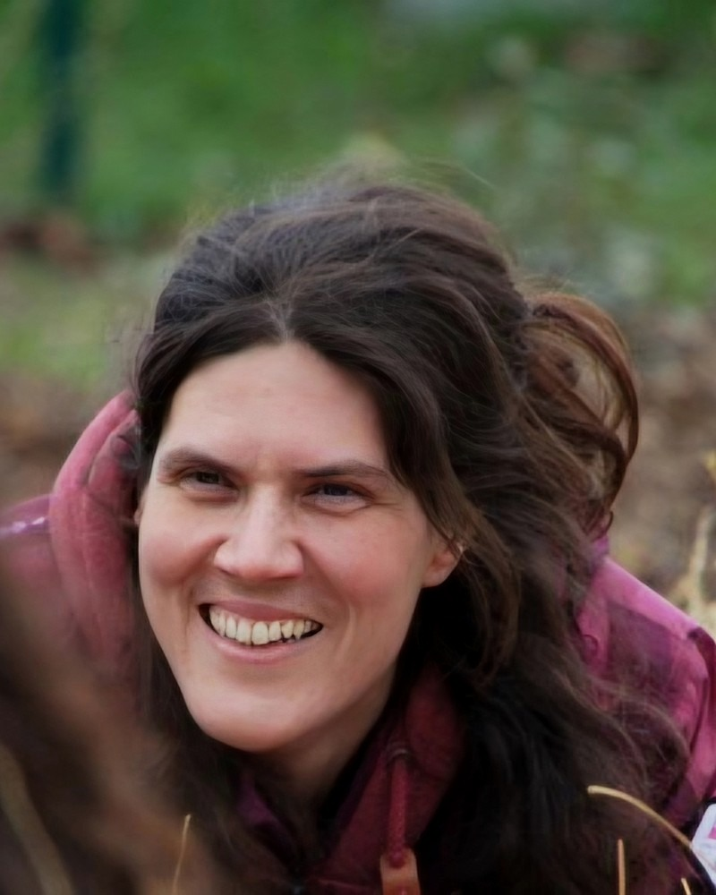
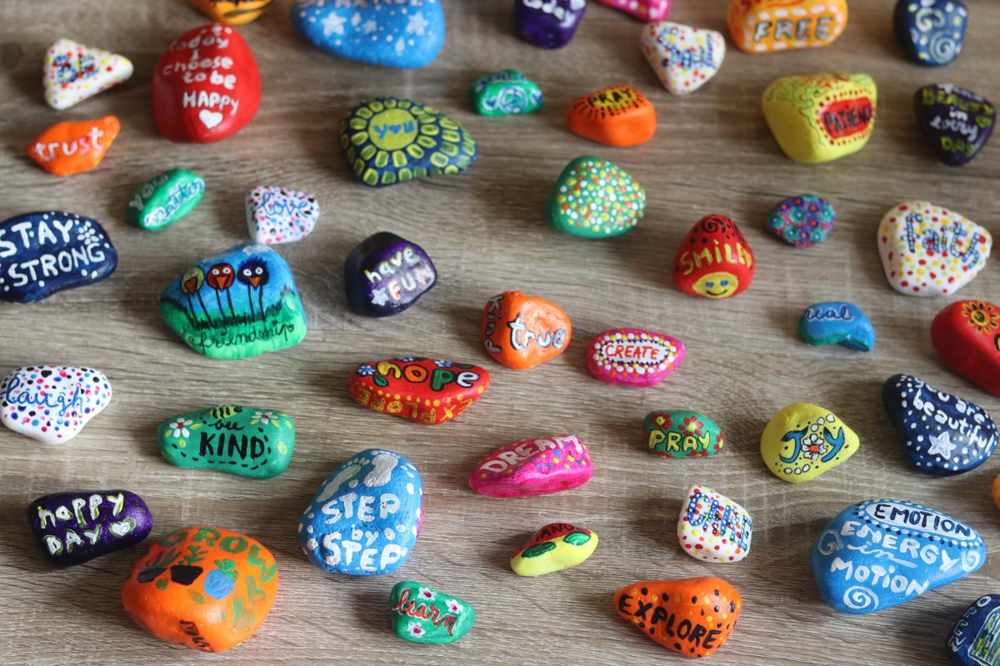
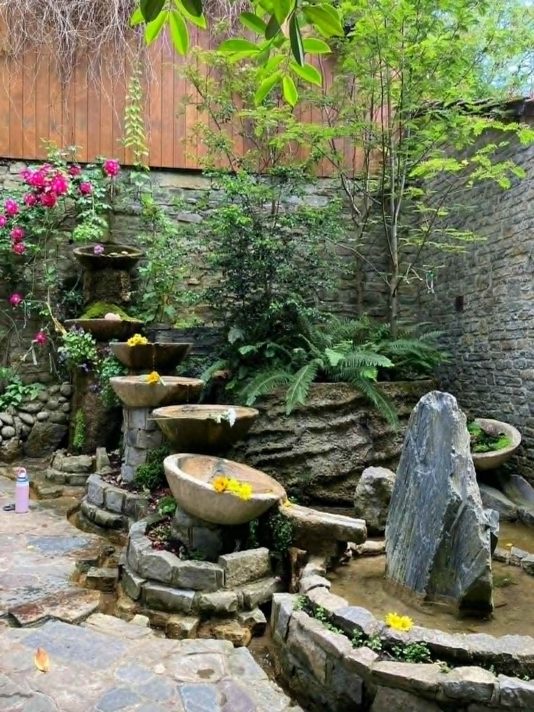
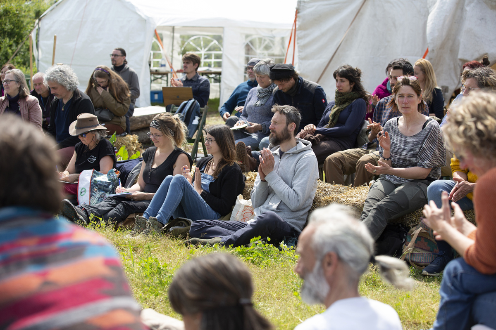
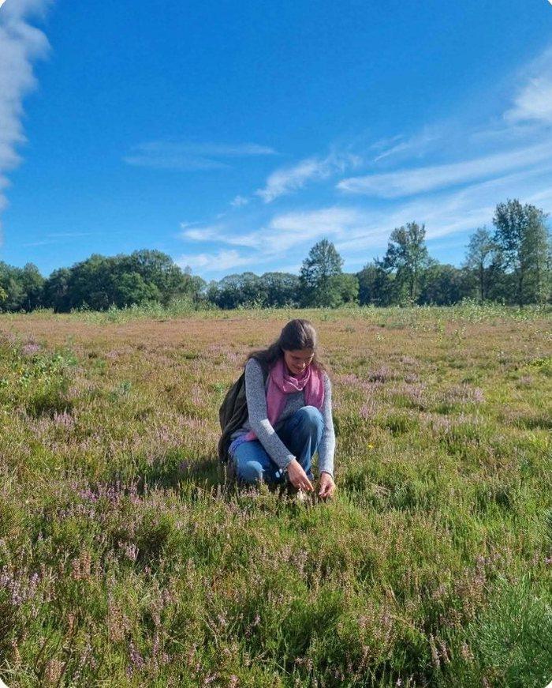
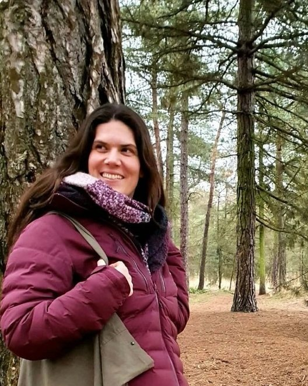
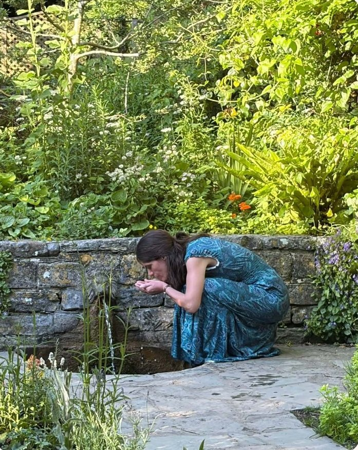

Als je zelfs maar een klein beetje op mij lijkt, kijk je vaak met gefronste wenkbrauwen en vertwijfelde blik naar de samenleving waarin we leven. ‘Wat zijn we eigenlijk met zijn allen aan het doen?’ Je hoort jezelf hardop die vraag stellen. Diep vanbinnen droom je van een wereld waarin je verbonden bent met de mensen om je heen. Je droomt van een wereld, waarin samenleven met moeder Aarde een evidentie is en luisteren naar je ziel vanzelfsprekend. Je droomt van vrijheid om jezelf te ontdekken en het leven ten volle te proeven.
“‘Hoe anders zouden je dagen er dan uitzien? Wat zou je dan nu aan het doen zijn?’
Je breekt de gedachte af. ‘Dat is niet realistisch’, hoor je jezelf denken. ‘In plaats van dagdromen moet ik zorgen voor brood op de plank. Het leven is nu eenmaal wat het is.’

Mag ik je iets vertellen?
Het leven is niét wat het nu is.
We rennen collectief rond in een hamsterwiel dat niets, werkelijk niets met leven te maken heeft! We zijn elke verbinding met ons lichaam, onze ziel en onze levensbron, de aarde kwijtgeraakt. Op wilskracht zetten we door, omdat het zo hoort, terwijl ons lichaam ons smeekt om eventjes op adem te mogen komen. Vanbinnen gaan we een beetje dood: we verwelken als een geplukte bloem, omdat we nul ruimte voor voelen en levendigheid vinden. De aarde beroven we in plaats van dat we met haar samenleven, omdat we eenvoudigweg niet langer voelen waar de gezonde maat ligt. Vroeg of laat gaat het hartsgrondig mis: Ons licht dooft uit, ons lichaam zegt stop, de aarde regenereert niet meer. Zijn we te ver gegaan, is het allemaal onherstelbaar beschadigd?
Wat we met zijn allen blijven doen, is niet ok. Jij ziet het, jij voelt het. Jij verlangt intens naar de transformatie.
Nee, word nu niet moedeloos!
Jouw kracht is groter dan je denkt. Jij bent niet kleiner dan dit hamsterwiel, integendeel, jij bent groter! Jij hebt alles in je om het leven waar je van droomt te creëren en om zo die broodnodige transitie naar levendigheid mee neer te zetten!
Wat het van je vraagt, is de keuze om te leren hoe.
Mag ik je ontmoeten?
Om met je te delen wat ik ontdekt heb en om jouw grootste supporter te worden, terwijl jij dat ene wilde en kostbare leven van je ten volle leeft?
Soms verlies je jezelf in het hamsterwiel en vergeet je je licht. Soms klamp je je vast aan je licht en lukt het daardoor niet om helemaal in de wereld te zijn.
Zullen we samen op pad gaan om jouw licht ten volle te laten landen, zodat ook jij kunt meebouwen aan die nieuwe aarde waar we van dromen?
Een eerste stap is dat je thuiskomt bij jezelf. Er is een ruimte in jou waar al jouw worstelingen mogen bestaan, waar je moe mag zijn.
Hier, dicht bij jezelf, mag alles wat je met moeite vasthield, losgelaten worden. Ontspan je en maak je geen zorgen. Wat écht bij je hoort, laat jou niet los. Vind je rust en overgave.
Dan kan jouw wilde vuur weer gaan gloeien en kun jij jouw kostbare kompas vanbinnen helderder gaan voelen: wie ben je, waar loop je warm voor, wat voedt jou?
TIP: Ook als je chronische pijn ervaart en opgebrand of bang bent, ben je welkom!
Zo ziet een sessie er vermoedelijk uit
In deze fase is het extra belangrijk dat we rustig werken. Na een kort gesprek kiezen we meestal voor een zacht en vorm.
Een sessie duurt ongeveer 75 minuten en je betaalt 77€.
De reis die je begint te maken, trekt je misschien naar binnen. Hier is het licht, aangenaam en veilig vertoeven. De wereld binnenin is eenvoudig: het wilde hart heeft er de regie.
Het verschil met de buitenwereld is groot: iedereen loopt er in het hamsterwiel. Wat een gekkenhuis!
De druk om mee te lopen is groot. Je voelt de twijfel in je sterker worden: kun je wel vertrouwen op wat je vanbinnen ervaren hebt? Het leven kan toch niet zo moeiteloos stromen?
En als wel, hoe dan? Hoe vertaal jij jouw liefdevolle, wijze inzichten in opbouwende keuzes en gedrag in de buitenwereld, zodat een zichzelf versterkende kringloop ontstaat?
Zo ziet een sessie er vermoedelijk uit
We werken creatief en ervaringsgericht .
Misschien laat ik je een schema tekenen van iets in je leven.
Misschien gaan we wat speelt .
Misschien maken we de dynamiek in een relatie helder via een .
Ik zal je bij alle oefeningen begeleiden en mijn vragen zullen vaak zijn: ‘En wat nog? Wat toont zich (nog) niet? Wat is er wél mogelijk?’
Al explorerend, ontdekkend, spelend doet je on(der)bewuste enthousiast mee met voorstellen aandragen en patronen zichtbaar maken. Er ontstaat beweging en vanuit die beweging kun je vaak plotseling stappen zetten die eerder onmogelijk leken.
Een sessie duurt ongeveer 75 minuten en je betaalt 77€.
Je merkt dat je verandert: je voelt je gegrond, aanwezig.
Synchroniciteiten zijn meerdere keren per dag daar en uitdagingen halen je niet meer moeiteloos onderuit.
Raakt het leven jou, dan verzet je je niet.
Jij geeft je over aan de ervaring: je blijft je verdiepen, jij gebruikt de ervaring om verder te groeien.
Je begrip en wijsheid nemen toe.
Je ontwikkelt het wilde vermogen om anderen bij te staan, kinderen te begeleiden, in harmonie met de aarde te leven en/of in je eigen vakgebied vernieuwend, voedend werk te brengen.
De vraag ontstaat: zal ik mijn kostbare geschenk bewust meer zichtbaarheid geven?
Zo ziet een sessie er vermoedelijk uit
Ik ben het klankbord voor je (gemeenschaps)project- of ondernemersidee. Samen diepen we alles uit. Ik jou in je rol van initiatiefnemer, verbinder en/of leidinggevende.
Ik kijk met je mee:
naar je productaanbod,
naar de klantenreis die je ontwikkelt,
naar hoe je jezelf profileert
en naar hoe je je kerngroep of team samenstelt.
Indien nodig kan ik je vanuit mijn ervaring als tech v.a. ook advies geven over welke technische systemen (bv. websitebuilder, e-mailmarketing, …) je best gebruikt.
TIP: Ik kan je kerngroep of team ook samen coachen naar meer verbinding. Bekijk hiervoor de pagina over Weversveld.
Een sessie duurt ongeveer 75 minuten en je betaalt 77€.
Dit zijn geen aparte producten, maar manieren om, volledig afgestemd met jou, binnen één sessie te werken.

Ga met je muis over een knop of tik erop om meer te lezen.
Integraal-holistische en therapeutische coaching
We kijken naar het hele plaatje van wie jij bent en hoe jij leeft.
Integraal-holistisch betekent dat we niets uit elkaar halen wat bij elkaar hoort. We geven ruimte aan gedrag, gevoelens en overtuigingen, aan wat je lichaam je vertelt en aan hoe je met anderen verbonden bent.
Een patroon dat je in je werk tegenkomt, heeft vaak wortels in je lijf of in je geschiedenis. In integraal-holistische coaching betrekken we alle lagen.
Therapeutisch betekent dat we de diepte durven ingaan: we kijken bv. naar beschermingsstrategieën die ooit nuttig waren, maar je nu in de weg zitten.
Gedurende de sessie en het traject blijf jij aan het stuur van je eigen proces.
Ik spiegel.
Ik geef oefeningen.
Ik stel vragen.
Ik doe wat ik kan om ervoor te zorgen dat jij je antwoorden vindt.
Let wel: Therapeutische coaching vervangt geen psychotherapie of medische begeleiding. Merk ik dat er nood is aan meer, dan kan ik je doorverwijzen.
Opstellingswerk
Onbewuste patronen en dynamieken binnen een systeem worden zichtbaar.
We kennen opstellingen veelal als familieopstellingen, waarbij alle leden van je kerngezin een plek krijgen in de ruimte en de wisselwerking en dynamiek tussen hen zichtbaar wordt, maar veel meer kan opgesteld worden:
We kunnen de leden van een team opstellen, de afdelingen van een onderneming, verschillende innerlijke delen van jouzelf of je doel met je belemmeringen en hulpbronnen.
Deze onderdelen van je systeem kunnen op verschillende manieren worden gerepresenteerd: Andere personen kunnen de positie aannemen van je moeder of vader, een afdeling in je onderneming, je doel of je belemmering.
De basisaanname bij opstellingswerk is dat elk systeem een eigen, voelbaar veld met eigen dynamieken heeft. Zodra andere personen als representant in dit veld stappen, pikken ze deze energie vanzelf op en handelen ze er moeiteloos naar.
In individuele sessies maken we zelden gebruik van andere personen als representanten. We kiezen er eerder voor poppetjes of blokjes of gekleurde matjes op de vloer. Ook hier geldt dat het veld en de dynamiek in het systeem voelbaar worden, zodra deze blokjes of matjes op hun plek liggen en we ermee beginnen te werken.
Lichaamsgericht (trauma)werk
Met veel zachtheid brengen we bewustzijn en stroming in de bevroren delen van je lichaam, zodat je je opnieuw levendig en aanwezig kunt voelen zonder angst.
In lichaamsgericht traumawerk volgen we de natuurlijke impuls van je lichaam om een ooit opgestarte traumarespons te voltooien en je er op die manier van te bevrijden:
Als het spannend wordt, wordt ons lichaam voorbereid om te vechten of vluchten.
Zijn vechten of vluchten geen optie, dan bevriest het lichaam. Na de spannende gebeurtenis dient het lichaam niet-opgebruikte of bevroren spanning weg te laten stromen.
Soms gebeurt dit niet. Het lichaam blijft dan in een constante staat van prikkeling, alertheid en bevriezing.
Dit kán zich uiten in voor de hand liggende symptomen als moeilijk in- en doorslapen, angst- en paniekklachten, wantrouwen naar anderen, vluchten in werken of consumeren, maar ook in uitstelgedrag of in niet meer voelen en als wandelend hoofd verder door het leven gaan.
Het is dit opgesloten blijven in een stressreactie dat ons lichaam uitput en vroeger of later leidt tot symptomen als chronische vermoeidheid, fibromyalgie en allerhande ontstekings- en auto-immuunreacties als artritis en MS.
In traumawerk maken we contact met de opgesloten energie in het lichaam, we voelen de overspanning en bevriezing en laten de energie weer stromen. Dit doen we voorzichtig en afgestemd. Het aanraken van de opgesloten energie wordt afgewisseld met oefeningen om veiligheid te ervaren. Op die manier leren we aan het systeem dat het (eindelijk) veilig is om te ontspannen.
Ik werk in zachtheid. Ik geloof niet in opbouwen naar een overweldigende emotionele ontlading, wel in een zacht, veilig, bewust proces.
We werken op een matrasje of matjes, alle materiaal is aanwezig. Loszittende kledij is fijn, maar geen verplichting.
Energetisch werk
Je lichaam wordt uitgenodigd om in resonantie te gaan met helende energie.
Ons lichaam is de meest verdichte vorm van ons bestaan. Ons lichaam is ingebed in een groter geheel van auralichamen en chakra’s. Deze worden op hun beurt gedragen en beïnvloed door onze hara. Allemaal worden ze bezield door onze wezenskern.
Het is alsof je naar een overstromende fontein kijkt:
Het overvloedige licht van ons wezenskern, wie we in essentie zijn, stroomt in onze hara.
Het licht van onze hara, wie onze ziel in dit leven is, stroomt in onze auralichamen en chakra’s.
Het licht van onze auralichamen en chakra’s, onze persoonlijkheid in dit leven, stroomt in ons lichaam.
Wordt de fontein ergens gestopt of afgesneden, dan ondervinden alle lager gelegen delen daar last van. Een blokkade hogerop wordt voelbaar als emotionele of fysieke klachten.
Bij energetisch werk gaan we kijken waar de fontein onvoldoende gevoed of vervormd is en herstellen we energetisch de stroom.
Er bestaan verschillende technieken om in deze subtiele dimensies te werken:
Ik kan je lichaam zachtjes aanraken.
Ik kan met mijn handen in de lagen rondom je lichaam werken.
Ik kan puur met intentie werken.
Al deze vormen werken op jouw subtiele energielagen in. Het effect voel je soms direct, vaak ook enkele dagen later.
Bij deze werkvorm zit of lig jij comfortabel in een stoel of op een matrasje en hoef je helemaal niks te doen.
Yesss, jij gaat nu op reis naar een vreugdevolle bestemming:
Leven en creatie stromen door jou heen. Liefde en passie kenmerken jouw handelen.
Je bent je bewust van jouw pad, van de dynamieken rondom en in jou en van jouw geschenk aan de wereld.
Je zorgt goed voor jezelf, jij kent jezelf.
Je respecteert je licht en je grenzen. Je leeft in lijn met wie je werkelijk bent, met jouw behoeften en talenten en… jij geniet.
Je wilde hart klopt altijd en jouw dagelijks leven ademt balans, synchroniciteit, magie…
Dit is geen sprookje!
Je kunt zo leven, hoe hectisch, chaotisch en niet afgestemd jouw realiteit nu ook is.
Dit ligt binnen je bereik, hoe verward en versnipperd je je nu ook voelt.
Mijn talent is verbinding. Ik verbind met wie jij werkelijk bent, met jouw échte behoeften.
Vanuit verbinding kies ik -altijd in samenspraak met jou- voor wat jou het meeste vooruit zal helpen.
Werkvormen kunnen zijn: integraal-holistisch coachen, zacht lichaams- en energetisch werk, ritueel- en opstellingswerk.
Ik hecht veel belang aan veiligheid. Als de veiligheid er is, kan ik je wijzen op waar je jezelf volgens mij iets wijsmaakt of in rondjes rijdt en niet vooruit geraakt.
De wolf is het heilige totemdier voor wie diep en authentiek wil leven en op die manier wegbereider wil zijn voor een nieuwe samenleving.
De krachtige wolf belichaamt een vlijmscherpe intuïtie, onvoorwaardelijke loyaliteit en de ultieme balans tussen vrijheid en verbondenheid.
Met Wolfsziel doorloop je een weldoordacht traject waarin je de oerkrachten van de wolf in jezelf gaat activeren.
Wees gewaarschuwd: jouw innerlijke vuur wordt zó sterk aangewakkerd dat je niet anders kunt dan jouw unieke plek in het grotere geheel in te nemen en te gaan leven vanuit je diepste, ontembare natuur.
Ben jij iemand die in deze tijd meer verbinding wil creëren, dan sta ik je graag bij! Verbinding bouwen is immers ook mijn passie.
In welk team wil jij meer verbinding ervaren? Welk project ben je opgestart waarmee je de gemeenschap wilt dienen? In welke groep mogen mensen elkaar meer horen? En welke rol draag jij?
Ik kan zowel jou individueel coachen in jouw rol als ter plekke aanwezig zijn en de groep als geheel coachen en ondersteunen in verbindende besluitvorming.
Is het verlangen om het Leven te dienen eenvoudigweg té groot in je?
Snak je naar je bewust verbinden met de natuurelementen? Communiceer je met de bomen? Bescherm je hen, als het nodig is? Breng je rust in een gebied door evenwicht te creëren in de heilige ruimtes ervan? Weet je hoe je kruiden kunt inzetten?
Dan ben je misschien een… wilde priester(es), geboren met in je hart de levendige herinnering aan die eeuwenoude natuurkennis.
Ben je er klaar voor om dit weten en deze connectie te her-activeren?
Via korte ontmoetingen en diepgaande trajecten nodigt Wilde Magie je uit om te luisteren naar onze vruchtbare aarde en naar jouw wilde, ontembare hart. Meer en meer zul je ervaren dat beide samenvallen: Wat goed is voor onze vruchtbare aarde, is goed voor jouw wilde hart en vice versa.
Een wilde priester(es) in deze tijd is een hoed(st)er van het Leven. Hij of zij kiest ervoor om voor het Leven te zorgen en om dit te doen via het integreren van vrouwelijk leiderschap.

Patriarchaat en matriarchaat worden vaak tegenover elkaar gezet. Toch zijn beide heel verschillend. Historisch gezien hebben vrouwen mannen in een matriarchaat nooit structureel onderdrukt, terwijl mannen vrouwen in een patriarchaat wel onderdrukt hebben. Matriarchale culturen zijn bijna altijd gelijkwaardige culturen waarin vrouwen een sterke stem hebben in besluitvorming, rituelen en eigendom.
We hoeven niet terug te keren naar het matriarchaat, maar laat ons ons wel de eerbied voor het leven vanuit oude natuurreligies herinneren en laat ons de gelijkwaardigheid een hernieuwde plek geven in de keuzes die we vandaag maken, vanuit liefde voor mannen én vrouwen.
Imbolc is de heilige dag van de vuur- en lichtgodin Brighid. Op deze dag vieren we dat de aarde opnieuw zal ontwaken en dat licht en warmte weer terug zullen keren.
Zoals onze voorouders op deze dag hun akkers liefdevol beklopten met wilgentakken om de slapende zaden in de bodem te wekken, zo nodigen wij vandaag onze zielezaden uit om te ontwaken. Via een krachtig ritueel verkennen we wat er in ons wacht om open te breken.
Aansluitend ontdekken we hoe we deze zaden in ons dagelijks leven de juiste voeding en zorg kunnen geven zodat het vitale kiempjes worden en hoe we deze kiempjes verder gezond kunnen laten uitgroeien. Aan het eind van deze dag weet je dat jouw dromen niet zomaar weer zullen vervliegen, maar daadwerkelijk zullen ontluiken en krachtig zullen doorgroeien tot in de verre toekomst.
Wees van harte welkom om mee te vieren en scheppen.
Bijdrage voor deelname aan deze seizoensworkshop is 99€.
De identiteit van de wilde priester(es) hoef je niet te verdienen; deze inwijding kan een ander jou niet schenken. De stap is een keuze die jij maakt. Jij kiest om een wilde priester(es) te zijn en om er voor het Leven te zijn vanuit gelijkwaardigheid en eerbied voor alles wat leeft. Deze dag symboliseert dan ook een levenslange keuze en een geschenk dat jij aan jezelf geeft.
Voel je de roep? Dan ben je meer dan welkom. Er zijn geen voorwaarden, geen vereisten. Kom precies zoals je bent, met een open en puur hart. De aarde en wij verwelkomen je met open armen, samen duiken we in wat het betekent om in deze tijd een wilde priester(es) te zijn.
Deze dag staat op zichzelf; je bent nergens toe verplicht en kunt hierna gewoon jouw eigen pad verder vervolgen.
Wees welkom van 9.30u tot 16.00u. Jouw bijdrage voor deze dag is 111€.
In dit zevendaags traject verkennen we samen wat het werkelijk betekent om een wilde priester(es) te zijn. Stap voor stap open je jouw innerlijke kanalen, oefen je essentiële vaardigheden en leer je om de kwaliteiten van de wilde priester(es) te belichamen in alle situaties die het leven je brengt.
Tijdens onze samenkomsten behandelen we o.a. de volgende thema's:
Heilige ruimte & rituelen: het openen en sluiten van heilige ruimte, het bezield initiëren en begeleiden van rituelen.
Voorouderkracht: het ontvangen van kracht, diepe heling en gidsing uit voorouderlijnen.
Aarde: samenwerken met medicijn en spirits uit het planten- en dierenrijk.
Vrouwelijk leiderschap: handelen, spreken en simpelweg zijn vanuit de dragende kwaliteit van vrouwelijk leiderschap.
Dit traject is een bewuste reis die we samen aangaan; de dagen zijn niet los te volgen, omdat we bouwen aan een bedding die per maand verdiept. Gedurende dit halve jaar is er continu ruimte om vragen te stellen, te brainstormen en ervaringen met elkaar uit te wisselen.
Als extra ondersteuning tijdens jouw reis mag je van start- tot einddatum van jouw traject gratis deelnemen aan elk seizoensritueel binnen Wilde Magie. Wil je nog intenser verdiepen? Dan nodigen we je van harte uit om te assisteren en/of om (delen van) deze seizoensrituelen mee vorm te geven.
Wees elke lesdag welkom van 9.30u tot 16.00u. Jouw bijdrage voor deze transformerende reis is 1515€.
Hoed(st)ers van Leven is mijn waarom. Het is mijn raison d’être. Het is waarvoor ik elke dag opsta!
Hoed(st)ers van Leven is een open gemeenschap: Je bent meer dan welkom!
Hoed(st)ers van Leven is de gemeenschap van wij die een grote collectieve transformatie zullen inleiden, dragen en waarmaken.
Het is de gemeenschap van wij die kiezen voor het LEVEN.
Dit is het symbool van een hoed(st)er van Leven.
Deze keuzes kunnen eenvoudig lijken:
Kies ik voor voedsel dat geteeld wordt met respect voor de aarde?
Kies ik voor verbinding of voor wantrouwen?
Kies ik voor voldoende rust voor mijn lichaam of voor doorjagen?
Kies ik voor een baan met voldoende vrije tijd?
Kies ik voor perfectionisme of voor groei?
Kies ik voor binnen de lijntjes of voor creativiteit?
Kies ik voor labels plakken of voor kinderen en jongeren werkelijk zien?
En toch… is kiezen voor Leven in de huidige tijd een revolutionaire daad, want de meeste van de keuzes waartoe de maatschappij ons aanzet, dragen de dood in zich: ze putten ons lichaam uit en onze creativiteit, ons vertrouwen, onze relaties, onze aarde.
Kiezen voor Leven is nu maatschappelijk gezien de meest waardevolle, betekenisvolle, transformatieve daad om te stellen. Alles wat ik aanbied, heeft dit focuspunt.
Let wel: dit is geen aanzet tot losgeslagen rebellie. Ongegronde rebellie, als uitlaatklep voor innerlijke chaos, brengt eveneens dood met zich mee. Balans is het sleutelwoord.
Wie ben jij, als je gebalanceerd bent? Welke keuzes maak je vanuit jezelf die dan oprecht kloppend zijn voor je lichaam, hart en relaties?
Zullen we elkaar ont-moeten?

Thuiskomen
Verbinden
Word deel van de gemeenschap.
Welkom, hoed(st)er van Leven, vind hier jouw stam!
Dit is je plek om te verbinden met medehoed(st)ers. Hoed(st)ers van Leven zijn allemaal uniek in wie ze zijn én samen onlosmakelijk verbonden in dezelfde waarden en principes.
Jouw makkelijkste startpunt voor verbinding is wellicht deze online gemeenschap. Hier kun je jezelf voorstellen, vragen voorleggen, samen brainstormen en met elkaar van gedachten wisselen.
Evenementen voor hoed(st)ers van Leven worden op deze online ontmoetingsplek aangekondigd, maar zullen ook op mijn website blijven verschijnen voor degenen die weerzin tegen online voelen.
Via dit online platform kun je elkaar vinden om samen Leven-brengende initiatieven en activiteiten vorm te geven en neer te zetten!
Deze online plek word je gratis aangeboden. Er wordt geen lidgeld gevraagd.
Kun en wil je financieel bijdragen aan initiatieven van verschillende Hoed(st)ers van Leven, dan vind je in de online community een opsomming en beschrijving van de projecten die extra overvloed wensen te ontvangen om duurzaam te kunnen functioneren.
Dat je een hoed(st)er van Leven bent, voel je in je hart.
Hoe vertaal je dit innerlijk weten in uiterlijke keuzes en gedrag? Hoe blijf je er, ook onder druk, aan herinnerd worden om bij elke keuze overtuigd te kiezen voor het Leven?
Soms helpt het om jezelf die identiteit toe te eigenen via een krachtig geschenk.
Soms helpt een zichtbare reminder.
In de webshop vind je weldra unieke voorwerpen om je te helpen herinneren, geladen met de energie van een hoed(st)er van Leven.
Vul je de vragenlijst voor ons in, zodat wij weten welke voorwerpen het meest gewenst zijn? Welk voorwerp zou jou het meest kunnen inspireren en ondersteunen om krachtig in jouw keuze te blijven staan?
In jouw aderen stroomt het bloed van een hoed(st)er van Leven en je verlangt naar daadwerkelijk bijdragen.
Deel jouw project hier en verbind je met andere initiatieven die openstaan voor extra handen en schouders en/of extra financiën. Verenig je en breng die prachtige aarde tot leven!
Wat je aanbiedt of waarop je reageert, hoeft geen onbetaald vrijwilligerswerk te zijn. Op de nieuwe aarde worden tijd en talenten geëerd en dankbaar vergoed. Laat armoededenken dus plaatsmaken voor de waarden van vreugde, creativiteit en overvloed.
Voorbeeldproject 1: We verenigen ons om samen zorg te dragen voor de heilige plekken dicht bij huis. Misschien staat er in jouw dorp een eeuwenoude eik of voel je je thuis bij een kapelletje temidden van lindes? Zulke plekken zijn vaak oude knooppunten van energie. Door ons opnieuw met deze plekken te verbinden en ze uitnodigend te maken, herstellen we een oude, bekrachtigende beweging.
Voorbeeldproject 2: We starten een coöperatieve samentuin en gemeenschapsboerderij voor de buurt op.
Voorbeeldproject 3: We creëren een leer- en ervaringsruimte voor jongeren die het moeilijk hebben op school, met vrienden, enz.
Verbinding is waar de wereld naar snakt en verbinding weven is mijn passie. Mijn kracht ligt in het zichtbaar maken van onderstromen in een groep, zodat we deze kunnen integreren in de gezamenlijke besluitvorming. Niemand blijft in de kou staan, elke nee wordt geëerd.
In welk team wil jij oprechte verbinding ervaren? Welk bezield project ben je opgestart waarmee je de gemeenschap wilt dienen? In welke groep mogen mensen elkaar werkelijk horen? Welke rol draag jij?
Ik kan jou individueel coachen in jouw rol en/of ter plekke aanwezig zijn en de groep als geheel coachen en trainen in verbindende besluitvorming.
Hoe ziet het project of de groep eruit? Wat is jouw rol? Wat gaat er goed? Wat lukt er moeilijk? Wat zou je willen proberen, maar durf je nog niet?
We werken intuïtief en ervaringsgericht coachend: We bewegen, we geven wat er speelt een plek in de ruimte, we leggen blinde vlekken bloot, we scherpen communicatievaardigheden aan en altijd nodig ik je uit om uit je comfortzone te stappen.
Ik laat je niet ontsnappen aan je schaduwkanten of moeilijke stukken, want het project kan maar zo ver gaan als jij als bezieler en drager van de groep bereid bent te gaan. Ik heb dus je volle toewijding nodig voor een doorbraak.
Ben je klaar om te gaan staan voor jouw ware potentieel?
Een sessie duurt ongeveer 75 minuten en je betaalt 77€.
Ik (her)weef het onzichtbare web tussen leden van een groep.
Dat doe ik op volgende sleutelmomenten:
als er conflict is
als de groepsmotivatie verdwenen is
als het niet lukt om tot een krachtig, gedragen besluit te komen
als een nieuwe groep een stevig fundament wil leggen
Verschillende vormen zijn mogelijk:
Ondersteuning bij een vergadering
Ik kom eenmalig langs om een cruciale vergadering of beslissing (maximaal 2 uur) te dragen en te begeleiden.
Bijdrage: 140€ per vergadering
Trainingstraject verbindend beslissen
In een intenser traject leer ik de groep hoe samen vloeiend te vergaderen en te beslissen zonder uitsluiting. Het traject omvat drie live ontmoetingen van een halve dag.
Bijdrage: 770€ voor het traject
Conflictbegeleiding
We duiken in meerdere sessies in het conflict om de lucht te klaren en de verbinding te herstellen.
Bijdrage: 95€ per losse sessie of 270€ voor een traject van drie sessies
Maatwerk
Daarnaast ontwerp ik met liefde een traject op maat, afgestemd op de specifieke noden en dynamiek van de groep. Plan hiervoor een intakegesprek in.
De wolf is het heilige totemdier voor wie diep en authentiek wil leven en op die manier wegbereider wil zijn voor een nieuwe samenleving.
De krachtige wolf belichaamt een vlijmscherpe intuïtie, onvoorwaardelijke loyaliteit en de ultieme balans tussen vrijheid en verbondenheid.
Met Wolfsziel doorloop je een weldoordacht traject waarin je de oerkrachten van de wolf in jezelf gaat activeren:
Vertrouwen op je instinct: De wolf nodigt je uit om te zakken van je hoofd naar je buik. Je leert meedogenloos te vertrouwen op je eigen innerlijke stem.
Samenleven met je clan/tribe: De wolf herinnert je aan de kracht van loyale relaties en werkelijke samenwerking, zónder dat je daarin je eigen, sterke individualiteit verliest.
Krachtig, innerlijk leiderschap: De wolf helpt je om je eigen grenzen feilloos te bewaken. Je neemt de leiding over je eigen leven en blijft onwankelbaar trouw aan jouw unieke pad.
Vrijheid en je eigen ritme: De wolf is intelligent, vrijgevochten en wild. Hij daagt je uit om de maatschappelijke verwachtingen los te laten en voluit te leven vanuit jouw eigen, natuurlijke ritme.
Wees gewaarschuwd: jouw innerlijke vuur wordt zó sterk aangewakkerd dat je niet anders kunt dan jouw unieke plek in het grotere geheel in te nemen en te gaan leven vanuit je diepste, ontembare natuur.
Je ontwikkelt je wolfsziel in een uitgestippeld online traject. In de actieve community word je gehoord en aangemoedigd. Je kunt er voor al je oefeningen en met al je vragen en bezorgdheden terecht.
De toegang tot het traject en de community behoud je gedurende twee jaar. In die periode neem je gratis deel aan alle wolfsziel-communitydagen. Tijdens die communitydagen diep je thema’s uit en oefen je vaardigheden in.
De wolfsziel in je wordt alsmaar sterker en na een tijdje voel je je ermee vergroeid: De wolfsziel en jij versmelten tot één spirit.
Hier zie je een kleine selectie uit de hoofdstukken:
Module 1 (thuiskomen):
Je wolfsbrein is zich op een bijzondere manier bewust van zijn omgeving. levend aanwezig zijn
In je wolfsbuik is je instinct gehuisvest. je lichaam als kompas
Je wolfshart leert je in gelijke mate verbinden én zelfstandig zijn. schuld nemen in relaties
Module 2 (belichamen):
De wolfsroedel is onfeilbaar in het aannemen van nieuwe manieren. de kleinste impactvolle stap, zet gewoontes in plaats van doelen
Module 3 (uitdragen):
Elke wolf heeft een plek en taak in het geheel. levenstaak
Jouw bijdrage voor deelname aan dit transformatieve traject is 1111€.
Zullen we samen ontdekken wat ik voor jou kan betekenen? Door jouw verhaal te horen, krijg ik een goed beeld van of – en zo ja, hoe – ik jou het beste kan ondersteunen bij jouw hulpvraag. Ook jij kunt ervaren of mijn energie en werkwijze aansluiten bij wat jij nu nodig hebt.
Een intakegesprek kan zowel op locatie als online plaatsvinden en duurt ongeveer een half uur.
Je kunt rechtstreeks een gratis intakegesprek inplannen door via de knop hieronder een datum en tijdstip in mijn agenda te kiezen.
Van jongs af aan brandt er een sterk verlangen in mij om dienstbaar te zijn aan de ontwikkelingsreis die we samen maken op deze prachtige aarde. Ik zet me op allerlei manieren in voor de transitie naar een nieuwe vorm van samenleven.
Na een basisopleiding in psychologie aan de universiteit van Gent, volgden talloze verdiepende specialisatietrainingen in bewustwordingswerk, complementaire geneeswijzen, biologisch-ecologische landbouwtechnieken en community building.
In het werkveld deed ik bijkomende ervaring op in o.a. het opstarten van coöperaties, het begeleiden van jongeren op een democratische school (volgens het Sudbury-model) en het geven van trainingen in permacultuur, voedselbossen, natural farming en kruidenleer.
Om de nieuwe aarde tot vol floreren te brengen, is het noodzakelijk dat we afstappen van patriarchale systemen en denken in tekort.
We dienen ons volledig op ons gemak te voelen bij de nieuwe waarden van vreugde, creativiteit en overvloed en ze zowel individueel als in groep te belichamen en uit te dragen.
In mijn werk nu is dàt precies waar ik op focus.
Ben je nieuwsgierig geworden naar wat ik voor jou kan betekenen? Zullen we elkaar ont-moeten?



Mijn gevolgde opleidingen in binnen- en buitenland